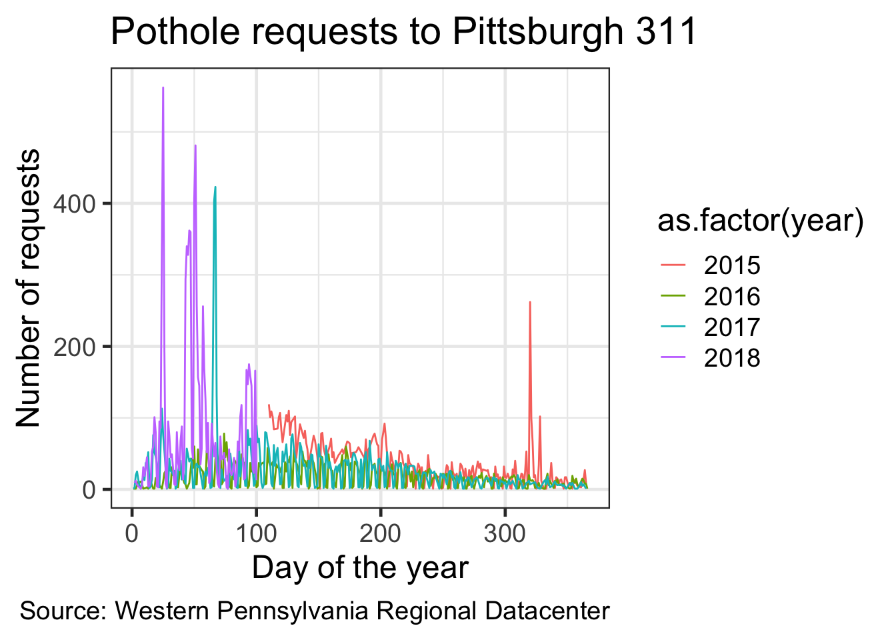

install.packages(c("tidyverse", "lubridate", "ggmap"))
#you will see activity in the console as the packages are installedThis material was presented at Code & Supply in 2018.
Goals
- Learn how R works
- Gain basic skills for exploratory analysis with R
- Learn something about local data and potholes!
If we are successful, you should be able to hit the ground running on your own project with R
Setup
Install R from CRAN
- Use the default options in the installation process
Install RStudio from RStudio
- RStudio Desktop
What is R
R is an interpreted programming language for statistics
RStudio
Integrated Development Environment for R
- Code editor
- Console
- Workspace (Environment, History, Connections, Git)
- Plots and Files (Packages, Help, Viewer)
We will enter our code in the Code Editor panel. When you execute code in the code editor, the output is shown in the Console (or the Plots or Viewer) panel.
Install the tidyverse, lubridate, and ggmap packages
Create a folder called “R workshop”
Download the 311 data from the WPRDC
Move that CSV into the “R workshop” folder
How Does R Work?
Basic Functions
- add
- subtract
- strings
1[1] 11 + 2[1] 310 / 2[1] 55 * 2[1] 10"this is a string. strings in R are surrounded by quotation marks."[1] "this is a string. strings in R are surrounded by quotation marks."Type matters
"1" + 1Error in "1" + 1: non-numeric argument to binary operatorstr() checks the type of the object
str(1) num 1str("1") chr "1"Objects, Functions, and Assignment
Reminder that objects are shown in the Environment panel (top right panel)
xError in eval(expr, envir, enclos): object 'x' not foundYou assign values to objects using “<-”
x <- 1
x [1] 1Type out the object’s name and execute it to print it in the console
You can overwrite (or update) an object’s value
x <- 2
x[1] 2You can manipulate objects with operators
x <- 1
y <- 5
x + y[1] 6c() means “concatenate”. It creates vectors
a <- c(x, y)
a[1] 1 5: creates a sequence of numbers
1:10 [1] 1 2 3 4 5 6 7 8 9 10You can perform functions on objects
z <- sum(a)
z[1] 6Dataframes
Dataframes are rectangular objects that consist of rows and columns, similar to what you see in an Excel spreadsheet
my_df <- data.frame(a = 1:5,
b = 6:10,
c = c("a", "b", "c", "d", "e"))
my_df a b c
1 1 6 a
2 2 7 b
3 3 8 c
4 4 9 d
5 5 10 eSelect individual columns in a dataframe with the $ operator
my_df$a[1] 1 2 3 4 5“<-” and “=” do the same thing. To minimize confusion, many people use “<-” for objects and “=” for assigning variables within functions or dataframes
x <- 1
z <- data.frame(a = 1:5,
b = 6:10)
z a b
1 1 6
2 2 7
3 3 8
4 4 9
5 5 10Logic
“x == y” means “is x equal to y?”
1 == 2[1] FALSE“!” means “not”
!FALSE[1] TRUETRUE = 1, FALSE = 0
TRUE + FALSE[1] 1TRUE + TRUE[1] 2R is case-sensitive
"a" == "A"[1] FALSELoading packages
library(package_name)You have to load your packages each time you start R. Do not use quotation marks in the library() function
Commenting
Any code that follows a “#” is treated as a comment, and is not executed
1 + 1[1] 2#1 + 1
#code that is "commented out" will not be executedComment your code to make sure you understand it. It is aso useful to other people who use your code, including Future You.
Be kind to Future You. Comment your code.
Getting help with R
Use the built-in documentation. Put a “?” before the name of a function to access the documentation in the Help panel
?meanWorking Directory
The working directory is where your R scripts and your data are stored
How to set up the working directory
This command prints the current working directory
getwd()Use the menu to set up your working directory
Session menu -> Set working directory -> choose your folder
This command does the same thing
setwd()Compare to Excel
R separates the data from the analysis. The data is stored in files (CSV, JSON, etc). The analysis is stored in scripts. This makes it easier to share analysis performed in R. No need to take screenshots of your workflow in Excel. You have a record of everything that was done to the data. R also allows you to scale your analysis up to larger datasets and more complex workflows, where Excel would require lots of risky repetition of the same task.
What is the Tidyverse?
A group of R packages that use a common grammar for wrangling, analyzing, modeling, and graphing data
- Focus on dataframes
- Columns and rows
Key Tidyverse functions and operators
- select columns
- filter rows
- mutate new columns
- group_by and summarize rows
- ggplot2 your data
- The pipe %>%
library(tidyverse)
library(lubridate)read_csv() reads CSV files from your working directory
df <- read_csv("your_file_name_here.csv")colnames(df) <- tolower(colnames(df)) #make all the column names lowercase
#initial data munging to get the dates in shape
df %>%
mutate(date = ymd(str_sub(created_on, 1, 10)),
time = hms(str_sub(created_on, 11, 18)),
month = month(date, label = TRUE),
year = year(date),
yday = yday(date)) %>%
select(-c(created_on, time)) -> dfExplore the data
df #type the name of the object to preview it# A tibble: 225,189 × 21
`_id` request_id request_type request_origin status department neighborhood
<dbl> <dbl> <chr> <chr> <dbl> <chr> <chr>
1 154245 54111 Rodent contr… Call Center 1 Animal Ca… Middle Hill
2 154246 53833 Rodent contr… Call Center 1 Animal Ca… Squirrel Hi…
3 154247 52574 Potholes Call Center 1 DPW - Str… Larimer
4 154248 54293 Building Wit… Control Panel 1 Permits, … <NA>
5 154249 53560 Potholes Call Center 1 DPW - Str… Homewood No…
6 154250 49519 Potholes Call Center 1 DPW - Str… Homewood No…
7 154251 49484 Potholes Call Center 1 DPW - Str… Homewood No…
8 154252 53787 Rodent contr… Call Center 1 Animal Ca… South Side …
9 154253 52887 Potholes Call Center 1 DPW - Str… East Hills
10 154254 53599 Rodent contr… Call Center 1 Animal Ca… East Allegh…
# ℹ 225,179 more rows
# ℹ 14 more variables: council_district <dbl>, ward <dbl>, tract <dbl>,
# public_works_division <dbl>, pli_division <dbl>, police_zone <dbl>,
# fire_zone <chr>, x <dbl>, y <dbl>, geo_accuracy <chr>, date <date>,
# month <ord>, year <dbl>, yday <dbl>glimpse(df) #get a summary of the dataframeRows: 225,189
Columns: 21
$ `_id` <dbl> 154245, 154246, 154247, 154248, 154249, 154250, …
$ request_id <dbl> 54111, 53833, 52574, 54293, 53560, 49519, 49484,…
$ request_type <chr> "Rodent control", "Rodent control", "Potholes", …
$ request_origin <chr> "Call Center", "Call Center", "Call Center", "Co…
$ status <dbl> 1, 1, 1, 1, 1, 1, 1, 1, 1, 1, 1, 1, 1, 1, 1, 1, …
$ department <chr> "Animal Care & Control", "Animal Care & Control"…
$ neighborhood <chr> "Middle Hill", "Squirrel Hill North", "Larimer",…
$ council_district <dbl> 6, 8, 9, NA, 9, 9, 9, 3, 9, 1, 4, 4, 9, 9, 9, 7,…
$ ward <dbl> 5, 14, 12, NA, 13, 13, 13, 16, 13, 23, 19, 32, 1…
$ tract <dbl> 42003050100, 42003140300, 42003120800, NA, 42003…
$ public_works_division <dbl> 3, 3, 2, NA, 2, 2, 2, 4, 2, 1, 4, 4, 2, 2, 2, 2,…
$ pli_division <dbl> 5, 14, 12, NA, 13, 13, 13, 16, 13, 23, 19, 32, 1…
$ police_zone <dbl> 2, 4, 5, NA, 5, 5, 5, 3, 5, 1, 6, 3, 5, 5, 4, 5,…
$ fire_zone <chr> "2-1", "2-18", "3-12", NA, "3-17", "3-17", "3-17…
$ x <dbl> -79.97765, -79.92450, -79.91455, NA, -79.89539, …
$ y <dbl> 40.44579, 40.43986, 40.46527, NA, 40.45929, 40.4…
$ geo_accuracy <chr> "APPROXIMATE", "APPROXIMATE", "EXACT", "OUT_OF_B…
$ date <date> 2016-03-10, 2016-03-09, 2016-03-03, 2016-03-11,…
$ month <ord> Mar, Mar, Mar, Mar, Mar, Feb, Feb, Mar, Mar, Mar…
$ year <dbl> 2016, 2016, 2016, 2016, 2016, 2016, 2016, 2016, …
$ yday <dbl> 70, 69, 63, 71, 68, 53, 53, 69, 64, 68, 69, 71, …The pipe
%>% means “and then”
%>% passes the dataframe to the next function
select
select() selects the columns you want to work with. You can also exclude columns using “-”
df %>% #select the dataframe
select(date, request_type) #select the date and request_type columns# A tibble: 225,189 × 2
date request_type
<date> <chr>
1 2016-03-10 Rodent control
2 2016-03-09 Rodent control
3 2016-03-03 Potholes
4 2016-03-11 Building Without a Permit
5 2016-03-08 Potholes
6 2016-02-22 Potholes
7 2016-02-22 Potholes
8 2016-03-09 Rodent control
9 2016-03-04 Potholes
10 2016-03-08 Rodent control
# ℹ 225,179 more rowsfilter
filter() uses logic to include or exclude rows based on the criteria you set
You can translate the following code into this English sentence: Take our dataframe “df”, and then select the date and request_type columns, and then filter only the rows where the request_type is “Potholes”.
df %>%
select(date, request_type) %>%
filter(request_type == "Potholes") #use the string "Potholes" to filter the dataframe# A tibble: 31,735 × 2
date request_type
<date> <chr>
1 2016-03-03 Potholes
2 2016-03-08 Potholes
3 2016-02-22 Potholes
4 2016-02-22 Potholes
5 2016-03-04 Potholes
6 2016-03-11 Potholes
7 2016-03-08 Potholes
8 2016-03-08 Potholes
9 2016-03-08 Potholes
10 2016-03-08 Potholes
# ℹ 31,725 more rowsmutate
mutate() adds new columns, or modifies existing columns
df %>%
select(date, request_type) %>%
filter(request_type == "Potholes") %>%
mutate(weekday = wday(date, label = TRUE)) #add the wday column for day of the week# A tibble: 31,735 × 3
date request_type weekday
<date> <chr> <ord>
1 2016-03-03 Potholes Thu
2 2016-03-08 Potholes Tue
3 2016-02-22 Potholes Mon
4 2016-02-22 Potholes Mon
5 2016-03-04 Potholes Fri
6 2016-03-11 Potholes Fri
7 2016-03-08 Potholes Tue
8 2016-03-08 Potholes Tue
9 2016-03-08 Potholes Tue
10 2016-03-08 Potholes Tue
# ℹ 31,725 more rowsgroup_by and summarize
group_by() and summarize() allow you to gather groups of rows and perform functions on them
Typical functions
- sum()
- mean()
- sd() standard deviation
- n() the number of rows
(df %>%
select(date, request_type) %>% #select columns
filter(request_type == "Potholes") %>% #filter by "Potholes"
mutate(month = month(date, label = TRUE)) %>% #add month column
group_by(request_type, month) %>% #group by the unqiue request_type values and month values
summarize(count = n()) %>% #summarize to count the number of rows in each combination of request_type and month
arrange(desc(count)) -> df_potholes_month) #arrange the rows by the number of requests# A tibble: 12 × 3
# Groups: request_type [1]
request_type month count
<chr> <ord> <int>
1 Potholes Feb 5569
2 Potholes Mar 3961
3 Potholes Apr 3873
4 Potholes May 3388
5 Potholes Jan 3089
6 Potholes Jun 2896
7 Potholes Jul 2688
8 Potholes Aug 1913
9 Potholes Nov 1344
10 Potholes Sep 1260
11 Potholes Oct 1113
12 Potholes Dec 641Put your code in parentheses to execute it AND print the output in the console
Making graphs with 311 data
ggplot2
- aesthetics (the columns you want to graph with)
- geoms (the shapes you want to use to graph the data)
ggplot(data = _ , aes(x = _, y = _)) +
geom_()Graph the number of pothole requests per month
ggplot(data = df_potholes_month, aes(x = month, y = count)) +
geom_col()Pipe your data directly into ggplot2
df_potholes_month %>%
ggplot(aes(x = month, y = count)) + #put the month column on the x axis, count on the y axis
geom_col() #graph the data with columns
Make it pretty. Add a title, subtitle, axes labels, captions, and themes
df_potholes_month %>%
ggplot(aes(month, count)) +
geom_col() +
labs(title = "Pothole requests to Pittsburgh 311",
x = "",
y = "Number of requests",
caption = "Source: Western Pennsylvania Regional Datacenter") +
theme_bw()One problems with this graph is that the data is not complete for the years 2015 and 2018
df %>%
distinct(year, date) %>% #get the unique combinations of year and date
count(year) #shortcut for group_by + summarize for counting. returns column "n". calculate how many days of data each year has# A tibble: 4 × 2
year n
<dbl> <int>
1 2015 231
2 2016 366
3 2017 365
4 2018 100Instead of plotting the raw sum, we can calculate and plot the mean number of requests per month
(df %>%
filter(date >= "2016-01-01", #only select the rows where the date is after 2016-01-01 and before 2018-01-1
date <= "2018-01-01",
request_type == "Potholes") %>%
count(request_type, year, month) -> df_filtered)# A tibble: 24 × 4
request_type year month n
<chr> <dbl> <ord> <int>
1 Potholes 2016 Jan 222
2 Potholes 2016 Feb 594
3 Potholes 2016 Mar 973
4 Potholes 2016 Apr 759
5 Potholes 2016 May 822
6 Potholes 2016 Jun 784
7 Potholes 2016 Jul 604
8 Potholes 2016 Aug 556
9 Potholes 2016 Sep 364
10 Potholes 2016 Oct 318
# ℹ 14 more rowsdf_filtered %>%
group_by(month) %>%
summarize(mean_requests = mean(n)) -> df_filtered_monthsdf_filtered_months %>%
ggplot(aes(month, mean_requests)) +
geom_col() +
labs(title = "Pothole requests to Pittsburgh 311",
x = "",
y = "Mean number of requests",
caption = "Source: Western Pennsylvania Regional Datacenter") +
theme_bw()Make a line graph of the number of pothole requests in the dataset by date
df %>%
filter(request_type == "Potholes") %>%
count(date) #group_by and summarize the number of rows per date# A tibble: 983 × 2
date n
<date> <int>
1 2015-04-20 119
2 2015-04-21 101
3 2015-04-22 109
4 2015-04-23 102
5 2015-04-24 84
6 2015-04-27 85
7 2015-04-28 101
8 2015-04-29 107
9 2015-04-30 83
10 2015-05-01 66
# ℹ 973 more rows#assign labels to objects to save some typing
my_title <- "Pothole requests to Pittsburgh 311"
my_caption <- "Source: Western Pennsylvania Regional Datacenter"
df %>%
filter(request_type == "Potholes") %>%
count(date) %>%
ggplot(aes(date, n)) +
geom_line() + #use a line to graph the data
labs(title = my_title, #use the object you created earlier
x = "",
y = "Number of requests",
caption = my_caption) + #use the object you created earlier
theme_bw(base_size = 18) #base_family modifies the size of the fontNote that ggplot2 automatically formats the axis labels for dates
Graph the data by number of requests per day of the year
(df %>%
select(request_type, date) %>%
filter(request_type == "Potholes") %>%
mutate(year = year(date), #create a year column
yday = yday(date)) %>% #create a day of the year column
count(year, yday) -> df_day_of_year) # A tibble: 983 × 3
year yday n
<dbl> <dbl> <int>
1 2015 110 119
2 2015 111 101
3 2015 112 109
4 2015 113 102
5 2015 114 84
6 2015 117 85
7 2015 118 101
8 2015 119 107
9 2015 120 83
10 2015 121 66
# ℹ 973 more rowsdf_day_of_year %>%
ggplot(aes(yday, n, group = year)) + #color the lines by year. as.factor() turns the year column from integer to factor, which has an inherent order
geom_line() +
labs(title = my_title,
x = "Day of the year",
y = "Number of requests",
caption = my_caption) +
theme_bw(base_size = 18)That plotted a line for each year, but there is no way to tell which line corresponds with which year
Color the lines by the year
df_day_of_year %>%
ggplot(aes(yday, n, color = as.factor(year))) + #color the lines by year. #as.factor() turns the year column from integer to factor (ordinal string)
geom_line() +
labs(title = my_title,
x = "Day of the year",
y = "Number of requests",
caption = my_caption) +
theme_bw(base_size = 18)
Graph the cumulative sum of pothole requests per year
(df %>%
select(request_type, date) %>%
filter(request_type == "Potholes") %>%
mutate(year = year(date),
yday = yday(date)) %>%
arrange(date) %>% #always arrange your data for cumulative sums
group_by(year, yday) %>%
summarize(n = n()) %>%
ungroup() %>% #ungroup () resets whatever grouping you had before
group_by(year) %>%
mutate(cumsum = cumsum(n)) -> df_cumulative_sum) #calculate the cumulative sum per year# A tibble: 983 × 4
# Groups: year [4]
year yday n cumsum
<dbl> <dbl> <int> <int>
1 2015 110 119 119
2 2015 111 101 220
3 2015 112 109 329
4 2015 113 102 431
5 2015 114 84 515
6 2015 117 85 600
7 2015 118 101 701
8 2015 119 107 808
9 2015 120 83 891
10 2015 121 66 957
# ℹ 973 more rowsdf_cumulative_sum %>%
ggplot(aes(yday, cumsum, color = as.factor(year))) +
geom_line(size = 2) +
labs(title = my_title,
x = "Day of the year",
y = "Cumulative sum of requests",
caption = my_caption) +
scale_color_discrete("Year") +
theme_bw(base_size = 18)Making an area chart
Since 2015 and 2018 have incomplete data, filter them out
df %>%
count(request_type, sort = TRUE) %>%
top_n(5) %>% #select the top 5 request types
ungroup() -> df_top_requestsdf %>%
filter(date >= "2016-01-01", #only select the rows where the date is after 2016-01-01 and before 2018-01-1
date <= "2018-01-01") %>%
semi_join(df_top_requests) %>% #joins are ways to combine two dataframes
count(request_type, month) %>%
ggplot(aes(month, n, group = request_type, fill = request_type)) +
geom_area() +
scale_fill_discrete("Request type") + #change the name of the color legend
scale_y_continuous(expand = c(0, 0)) + #remove the padding around the edges
scale_x_discrete(expand = c(0, 0)) +
labs(title = "Top 5 types of 311 requests in Pittsburgh",
subtitle = "2016 to 2017",
x = "",
y = "Number of requests",
caption = my_caption) +
theme_bw(base_size = 18) +
theme(panel.grid = element_blank()) #remove the gridlines fom the plotFaceting
Facets allow you to split a chart by a variable
Where do pothole requests come from?
df %>%
count(request_origin, sort = TRUE)# A tibble: 10 × 2
request_origin n
<chr> <int>
1 Call Center 143716
2 Website 41106
3 Control Panel 26144
4 Report2Gov iOS 6272
5 Twitter 4425
6 Report2Gov Android 2371
7 Text Message 1086
8 Report2Gov Website 42
9 Email 22
10 QAlert Mobile iOS 5Make a line chart for the number of requests per day
Use facets to distinguish where the request came from
df %>%
select(date, request_type, request_origin) %>%
filter(request_type == "Potholes") %>%
count(date, request_type, request_origin) %>%
ggplot(aes(x = date, y = n)) +
geom_line() +
facet_wrap(~request_origin) + #facet by request_origin
labs(title = my_title,
subtitle = "By Request Origin",
x = "",
y = "Number of requests",
caption = my_caption) +
theme_bw(base_size = 18)Mapping
Load the ggmap package, which works with ggplot2
library(ggmap)Select the request_type, x, and y columns. x and y are longitude and latitude
(df %>%
select(request_type, x, y) %>%
filter(!is.na(x), !is.na(y),
request_type == "Potholes") -> df_map) #remove missing x and y values# A tibble: 31,735 × 3
request_type x y
<chr> <dbl> <dbl>
1 Potholes -79.9 40.5
2 Potholes -79.9 40.5
3 Potholes -79.9 40.5
4 Potholes -79.9 40.5
5 Potholes -79.9 40.5
6 Potholes -80.0 40.4
7 Potholes -79.9 40.5
8 Potholes -79.9 40.5
9 Potholes -79.9 40.5
10 Potholes -79.9 40.5
# ℹ 31,725 more rowspgh_coords <- c(lon = -79.9, lat = 40.4)
city_map <- get_googlemap(pgh_coords, zoom = 11)
(city_map <- ggmap(city_map))Put the data on the map
city_map +
geom_point(data = df_map, aes(x, y, color = request_type)) #graph the data with dotsThere is too much data on the graph. Make the dots more transparent to show density
city_map +
geom_point(data = df_map, aes(x, y, color = request_type), alpha = .1) #graph the data with dotsStill not great
Density plots are better for showing overplotted data
#Put the data on the map
city_map +
stat_density_2d(data = df_map, #Using a 2d density contour
aes(x, #longitude
y, #latitude,
fill = request_type,
alpha = ..level..), #Use alpha so you can see the map under the data
geom = "polygon") + #We want the contour in a polygon
scale_alpha_continuous(range = c(.1, 1)) + #manually set the range for the alpha
guides(alpha = guide_legend("Number of requests"),
fill = FALSE) +
labs(title = "Pothole requests in Pittsburgh",
subtitle = "311 data",
x = "",
y = "",
caption = my_caption) +
theme_bw(base_size = 18) +
theme(axis.text = element_blank())